Commercials · Filmmaking · Photography · Post-Production — authentic storytelling through stunning visuals, built by John Farag Fared since 2020.
"We believe in the power of authentic storytelling through stunning visuals. Every project is an opportunity to transform ideas into impactful content that resonates with audiences."
JF is a media production team founded in 2020 by John Farag Fared — a multidisciplinary artist, photographer, and filmmaker working across commercials and documentaries.
The concept of JF is based on a collaborative production process: for each project we assemble a dedicated crew of directors, cinematographers, video editors, and technicians who specialize in that specific craft — rather than forcing every job through one fixed in-house team.
To deliver world-class media production that elevates brands, associates, and individuals, and tells their stories through excellence in filmmaking, photography, and commercial content.
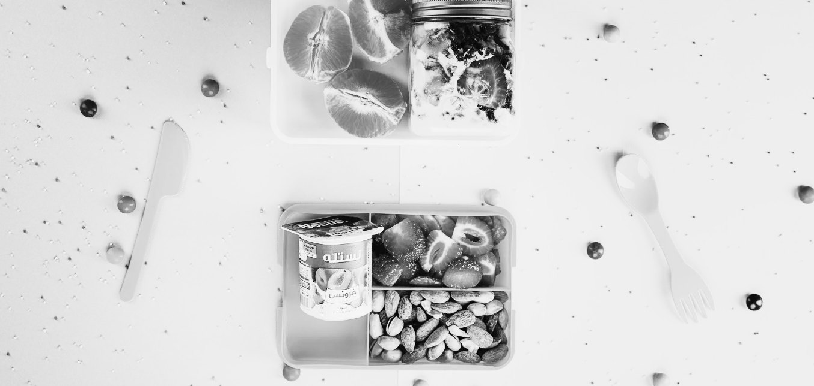
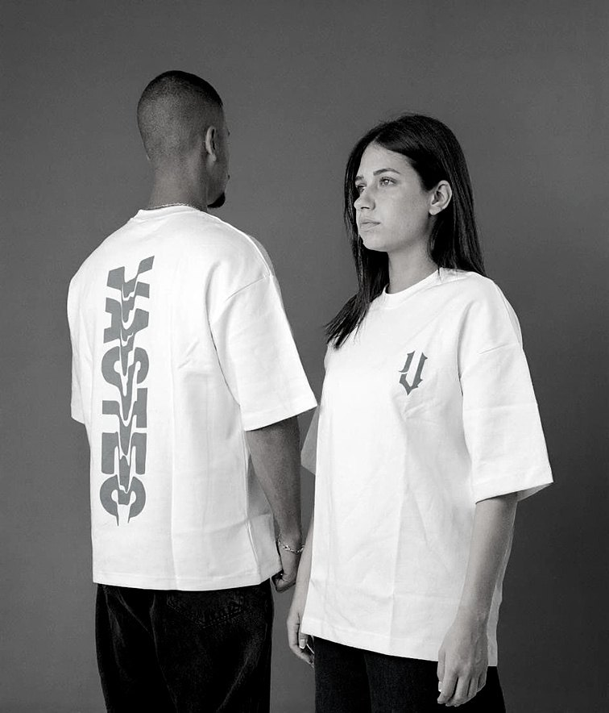
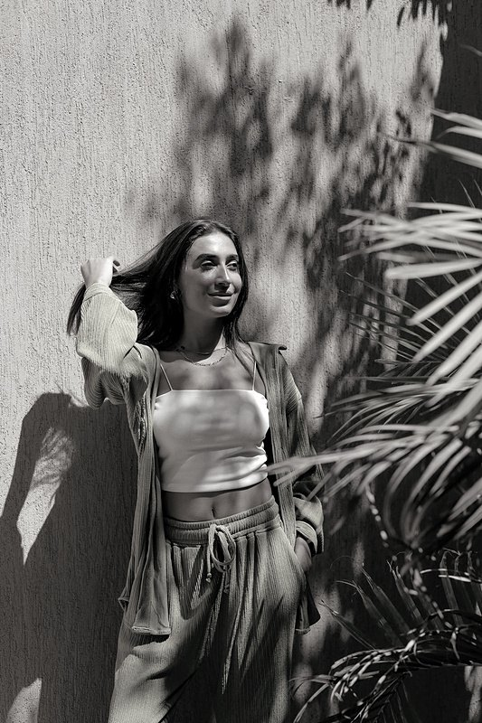
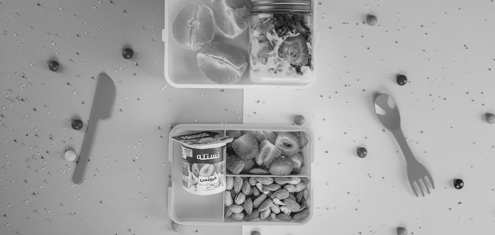
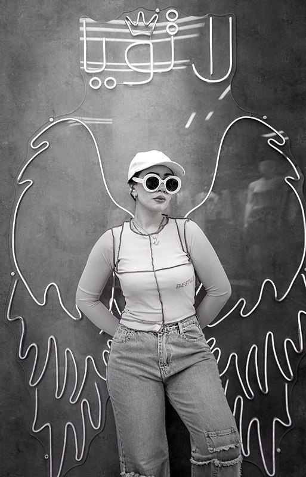
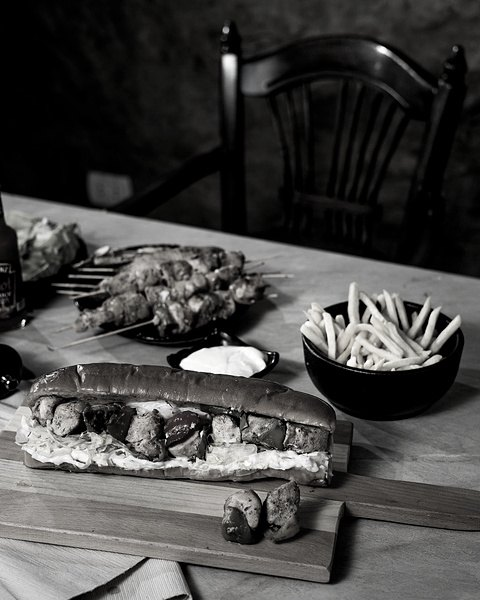
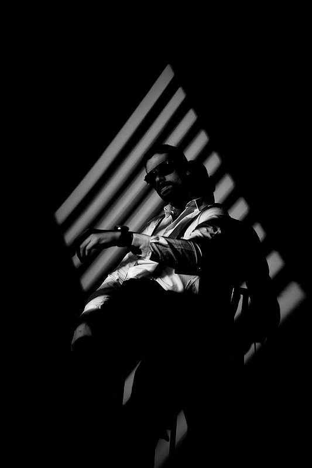
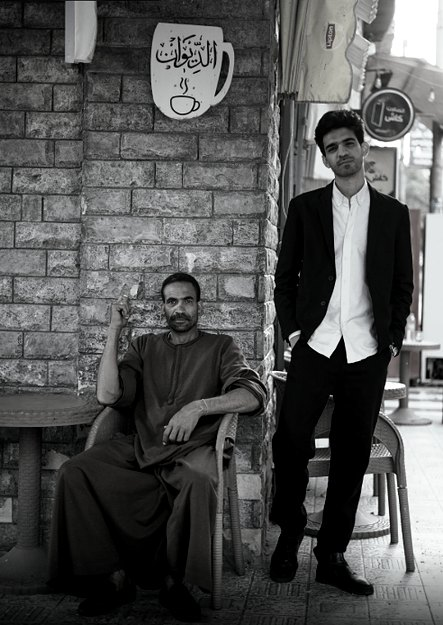
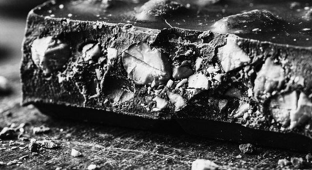
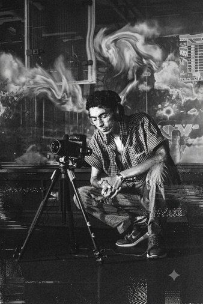
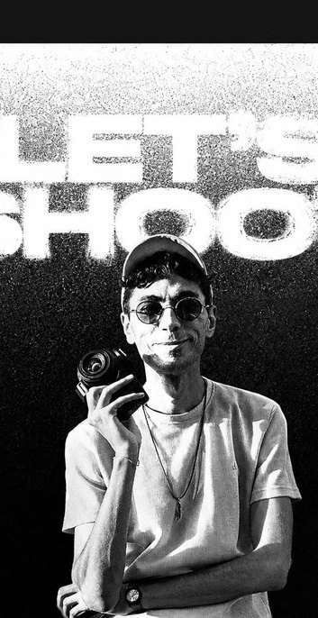
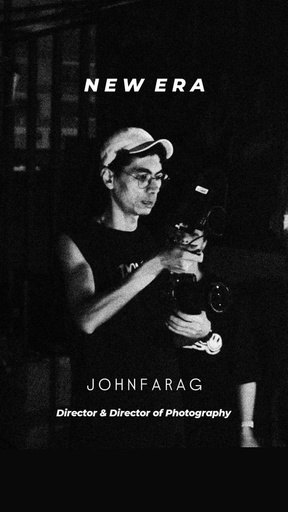
John founded JF Media Production in 2020, bringing a background in fine arts and architecture to commercial production. He leads projects end to end — from concept and script through on-set direction to final color grade.
His work spans real estate, hospitality, fashion, and commercial sectors, and he currently produces AI-assisted film content for Palmier Developments.
JF Media Production works with a trusted network of specialists, assembled per project — every production draws on people who do that one thing exceptionally well.
Clients are welcome on set. We share dailies and rough selects during the shoot so feedback happens while we can still act on it.
On request, we produce a dedicated BTS package — stills and a short edit — that brands use for social content, pitch decks, and internal communications.
Every project is archived with its BTS material, giving clients a documented record of their production.
Since 2020, JF Media Production has produced content for brands, agencies, and organizations across Egypt.
Palmier Developments · SAKAN · Smart Home · White Gold · Vastec
SPADE · AZIZ · Yummi Sushi · DAVINCI · House Party · Horeca Academy
MOKARI · QUEENZ · MK Store · DESIGNY · TOMMY · Latoya · ik world · Reese
Media Bots · Adwahles · Notch Studio
IMOX
Misryaty · Echo for Arts · Better Life · EGY Organizers
Agency Collaborations — through Media Bots, our work has contributed to campaigns for Nestlé, SC Bank, Tamweely, and Coda.
John leads every project personally, from script to final color grade, so nothing gets lost between departments.
A fine arts and architecture foundation shapes how we frame, light, and direct.
We don't force every project through the same fixed team; we bring in the director or technician each job actually needs.
From real estate and architecture to restaurants, retail, and non-profits, across 20+ brands since 2020.
One of the first studios in the market producing AI-assisted film content.
On the ground for shoots across the country.
Cairo, Egypt